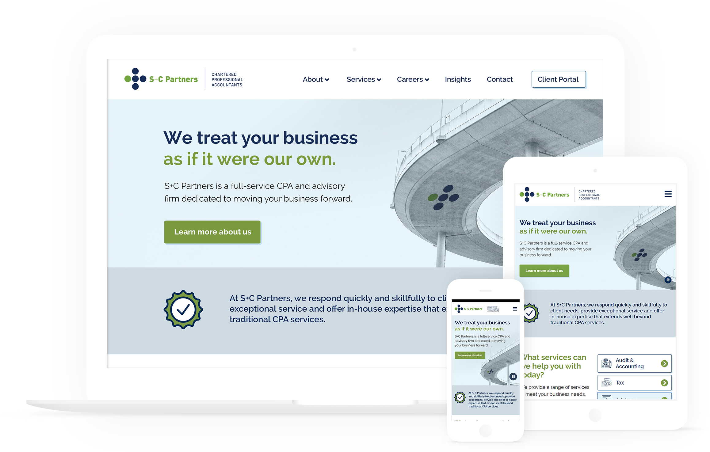

The Problem
S+C Partners needed a complete website refresh, since their old website contained a complexity of many pages, was not inclusive or accessible according to the WCAG 2.0, possessed a fairly large load of content and weilded heavy information architecture. Information was not easy to find, and legibility was on the lower end.
The Solution
Rather than optimizing their old existing website, our studio redid the entire website design using entirely new site architecture and content supplied by the copywriter at S+C Partners.
Final Product

Designed, crafted and built by Caitlin. Copyright © 2019 Caitlin Chu.